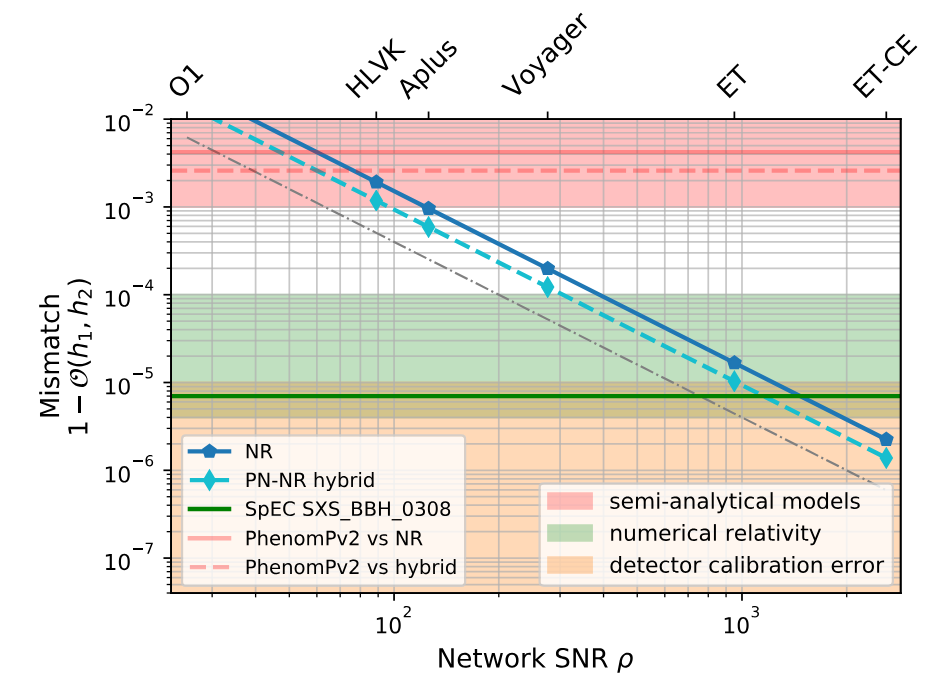

<section>
    <h2 class="header">Lesson 2: </h2>
    <h2 class="header">Fast is not enough</h2>
</section>

<section>
    <h4 class="header"> Numerical Relativity </h4>
    <div class="r-stack">
        <div class="fragment fade-in-then-out" data-fragment-index="1">
        <!-- Write down Einstein Field equaiton -->
            \[
            G_{\mu\nu} = 8\pi T_{\mu\nu}
            \]
        </div>
        <!-- Expand the G term -->
        <div class="fragment fade-in-then-out" data-fragment-index="2">
            \[
            R_{\mu\nu} - \frac{1}{2}g_{\mu\nu}R + g_{\mu\nu}\Lambda = 8\pi T_{\mu\nu}
            \]
        </div>
    </div>
</section>

<section>
    <iframe width="640px" height="480px" src="https://www.youtube.com/embed/z1SHeaJULzY?si=TeKvGmWJZ_PMVUo0" title="YouTube video player" frameborder="0" allow="accelerometer; autoplay; clipboard-write; encrypted-media; gyroscope; picture-in-picture; web-share" referrerpolicy="strict-origin-when-cross-origin" allowfullscreen>
    </iframe>
</section>

<section>
    
</section>

<section>
    <iframe width="640px" height="480px" src="https://www.youtube.com/embed/oLrHEE_cu2Q?si=72uGbZ0vlNimAymN" title="YouTube video player" frameborder="0" allow="accelerometer; autoplay; clipboard-write; encrypted-media; gyroscope; picture-in-picture; web-share" referrerpolicy="strict-origin-when-cross-origin" allowfullscreen></iframe>
</section>

<section>
    <h4 class="header">Super resolution with FNO</h4>
    <iframe width="560" height="315" src="https://www.youtube.com/embed/J70-bCWluA4?si=Zi3tRY8EFA70F9SY" title="YouTube video player" frameborder="0" allow="accelerometer; autoplay; clipboard-write; encrypted-media; gyroscope; picture-in-picture; web-share" referrerpolicy="strict-origin-when-cross-origin" allowfullscreen></iframe>
</section>


<section>
    
</section>

<style>
    .katex-display{
        margin: 0px;
    }
</style>